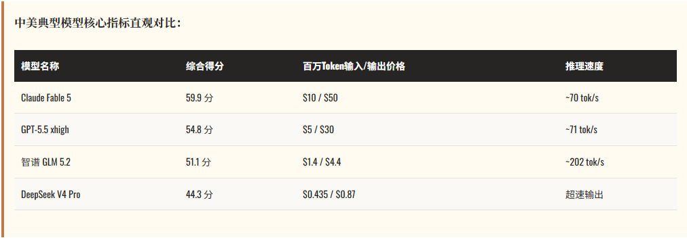
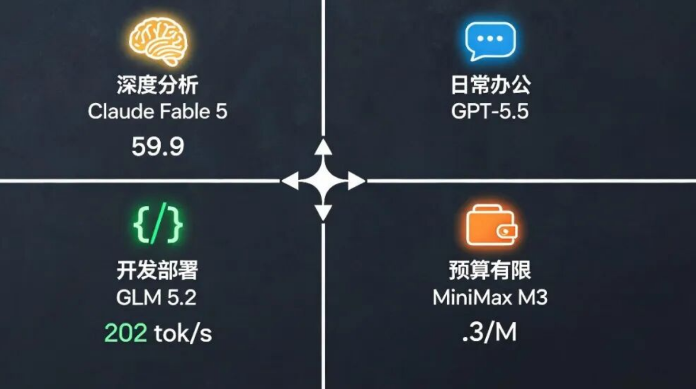

最新大模型榜单释出，Claude Fable 5 以 59.9 分登顶。这个分数比第二名高出整整4分——在一个头部模型差距通常以小数点计算的榜单里，领先相当夸张。但更有意思的事，不在这张榜单的前五名里。
一、 先看清当前座次
前三名格局很清晰：Anthropic 两席、OpenAI 一席。Anthropic 的 Fable 5（59.9）、Opus 4.8（55.7）、Sonnet 5（53.4）以及老版 Opus 4.7 表现强劲。OpenAI 的 GPT-5.5 则是把自己分成了四档，最好成绩拿到第三。SpaceXAI 的 Grok 4.5 high 则杀进第四。
与此同时，共有五家中国公司成功上榜：智谱 GLM 5.2（第8）、阿里 Qwen 3.7 Max（第12）、MiniMax M3（第14）、DeepSeek V4 Pro（第15）、月之暗面 Kimi K2.6（第17）。

二、 拆开中美两边看，关键差距不在分数
光看跑分，中国最好的模型GLM 5.2跟第一名差了8.8分。但如果对比另外三个现实维度，风向就变了：
1. 价格：美国的旗舰模型在不断提价，而中国模型的价格策略是“性能追近到差距不足一年，但价格打到你的零头”。DeepSeek 比 Claude Fable 5 便宜了 23 倍。
2. 速度：在真实应用场景中，GLM 5.2 和 Qwen 3.7 Max 均跑出了超过 200 tok/s 的极速，而美方旗舰大多在 70 tok/s 档位。
3. 调用量：根据 OpenRouter 的数据，全球 AI 大模型总调用量中中国模型占了一半以上（23.45 万亿 Token），是美国模型的 5.5 倍，连续十周领跑。

三、 真实世界的故事：美国公司在换中国模型
美国 AI 创业公司 Lindy，已经把所有 AI 业务全面切换到了 DeepSeek。理由很简单：跑分低 6-9 个月，但价格便宜 60%-90%，常规场景完全够用，几个月能省几百万美元。OpenRouter 数据显示，美国企业使用中国模型的 token 占比，从 2025 年上半年的 4.5% 飙升到了近期峰值的 46%。
结论：该用什么，看场景
- 容错率极低的场景（研究、关键决策）：用推理王者 Claude Fable 5。
- 高频调用、成本敏感场景（自动化、批量处理）：用 DeepSeek 或 MiniMax。
- 中间地带：用 GPT-5.5 或 GLM 5.2，够用不贵。
美国在做“AI 能想到的最难的事”，中国在做“AI 能用到的最多的地方”。前者决定上限，后者决定谁会真正改写游戏规则。